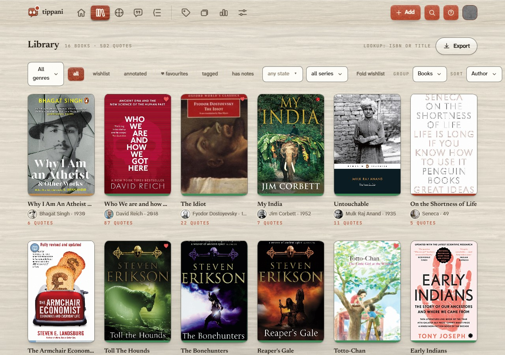
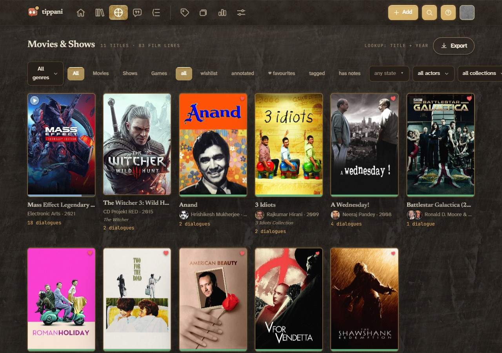
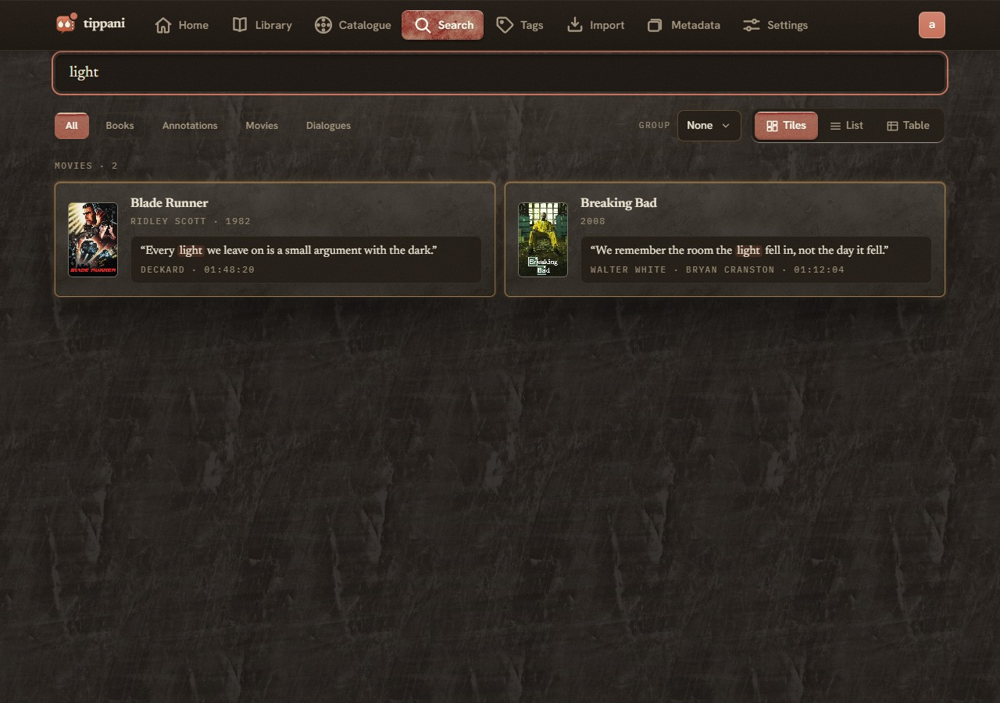
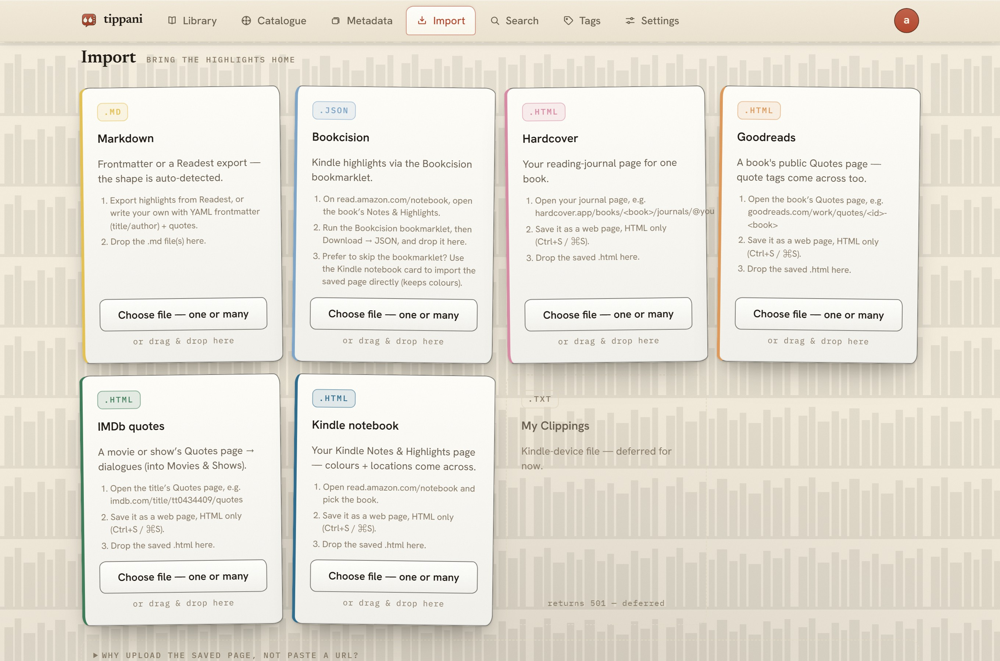

ṭippaṇī · टिप्पणी · টিপ্পনী — a marginal annotation
A self-hosted, multi-user home for your book highlights, film and show dialogues, and quotes from anywhere else. Paste or bulk-import them, tag and colour and favourite them, let it fetch the covers, search the lot instantly, and take it all back out as Markdown whenever you want.
I read on a Kindle, watch a lot of films, and kept ending up with highlights in four places that did not talk to each other — a Kindle clippings file, a notes app, a folder of screenshots, and the ones I had only meant to remember. Tippani is where I put all of it: one library, one search box, and an export that hands everything back in plain Markdown if I ever want to leave.
It runs on your own machine. There is no account to make, no server of mine to trust, and nothing is sent anywhere — metadata lookups are optional and only happen when you ask for one.
A highlight belongs to a page, a chapter, a timestamp or a speaker. All of that is a field, so you can find the line again by any of them.
Kindle My Clippings.txt, Bookcision, Goodreads, Hardcover, IMDb lists and plain Markdown. Duplicates are detected on the way in.
Open Library, Google Books, TMDB and TheTVDB, merged field by field — the first-publication year from one, the larger cover from another.
SQLite FTS5 across titles, authors, quotes, notes, tags and genres, sectioned by what actually matched, with typo correction when nothing does.
An optional daily review that quizzes you on your own quotes — who said it, which book it came from, what the missing phrase was.
Obsidian-friendly Markdown export, and an encrypted backup archive you can restore anywhere. Your library is a file you own.
It is built for a low-powered NAS that already runs a hundred other things. One static Go binary of about 12 MB, a SQLite file beside it, and roughly 25 MB of idle memory — a budget I hold it inside rather than a number I measured once. There are no background jobs: no pollers, no timers, no cron. When nothing is being asked of it, it does nothing.
docker run -d --name tippani \
-p 8080:8080 \
-v /your/data:/data \
ghcr.io/aaronified/tippani:latestIt serves plain HTTP on your LAN. Bring your own TLS through a reverse proxy, Tailscale, Netbird or Twingate — or hand it a PEM pair and it will serve HTTPS itself.




Two aesthetics, each with a light and a dark theme: paper, which is a notebook, and film, which is a contact sheet. The UI glossary names every control in both.
The roadmap lists everything planned, every bug I already know about, and — the part I would read first — the things I have set aside on purpose, so the boundaries are decisions rather than gaps. It takes requests.
Tippani was written with AI assistance, and the app itself contains no AI: no model calls, nothing sent anywhere, no feature that needs a key to work. Both halves of that are spelled out in AI.md.